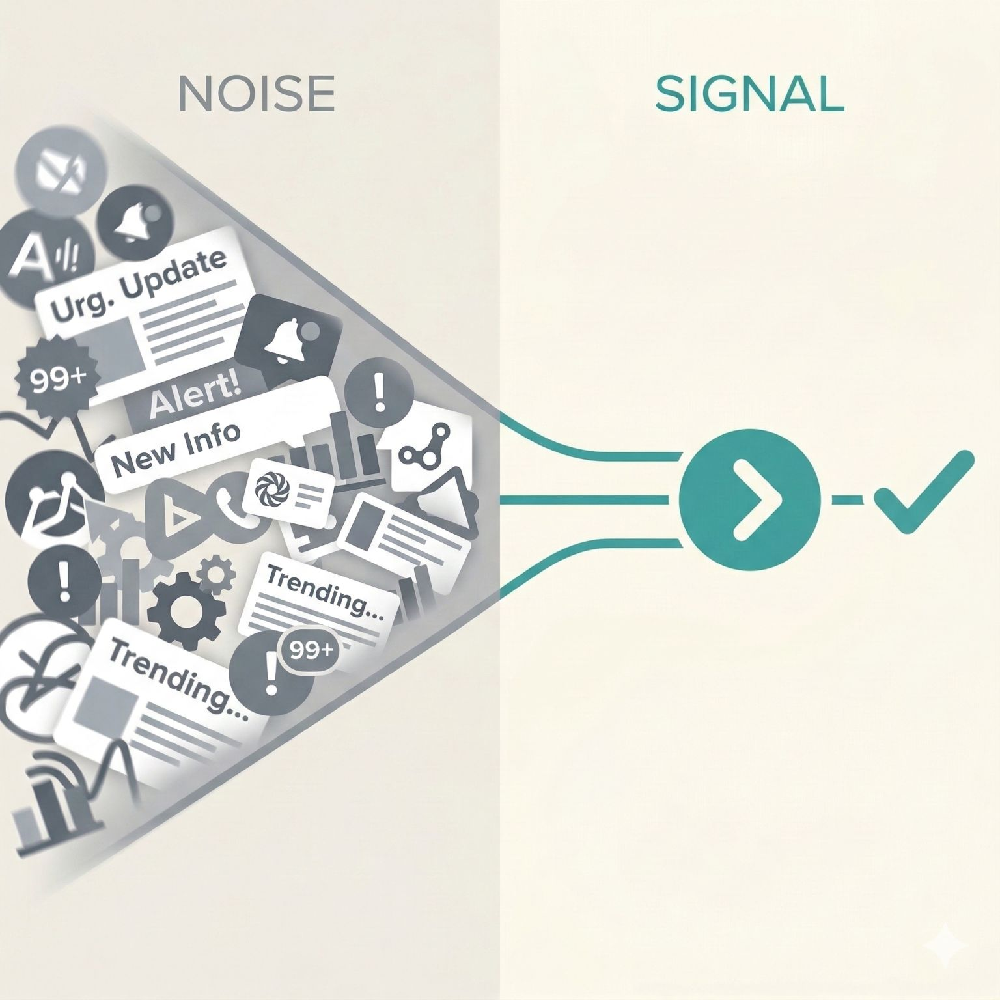
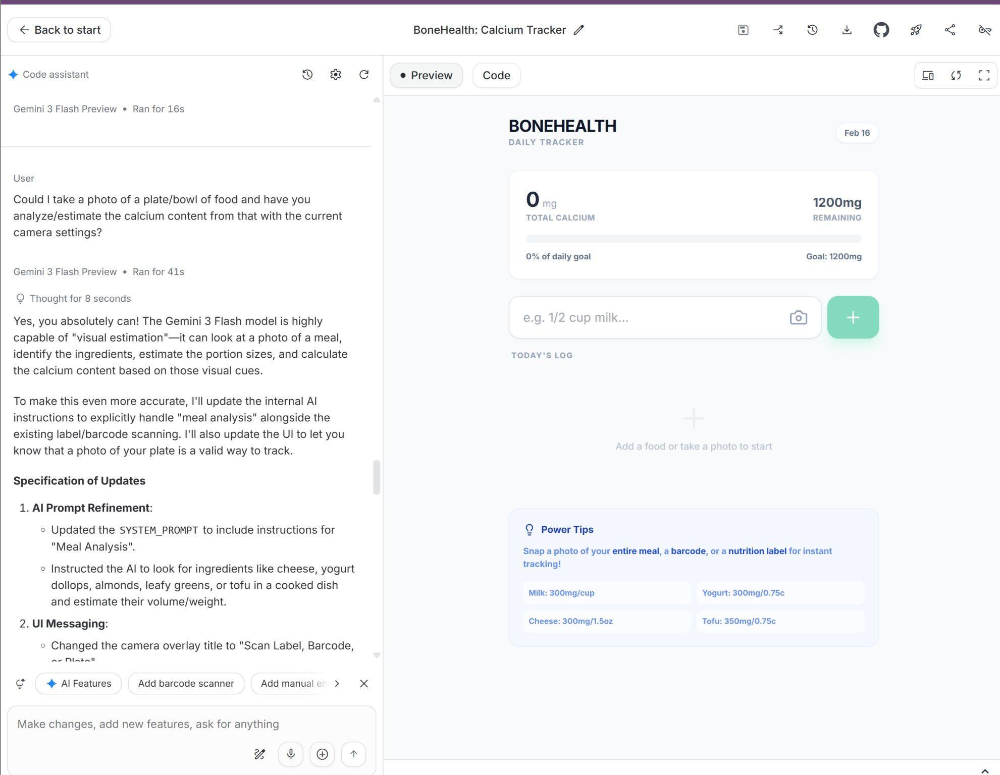

Should I Be Using Claude Now?
Why the anxiety about keeping up with AI is almost always worse than the actual gap.
Read →
Small Nonprofits Have an AI Advantage
Why small nonprofits are better positioned for practical AI adoption than they think.
Read →
What I Learned Vibe-Coding a Personal App
A field test of AI-assisted app building and what it reveals about the next layer of AI adoption.
Read →
AI Adoption and Trust in Nonprofits
How nonprofit organizations can adopt AI in ways that build rather than erode constituent trust.
Read →
AI Slop and the Tyranny of the Average
Why AI-generated content is producing a dangerous sameness, and why this is a leadership problem not a technical one.
Read →Stay current on AI in the nonprofit sector
A weekly digest of curated news and use cases for nonprofit leaders. Sent every Tuesday.
No spam. Unsubscribe anytime. We do not share subscriber data.